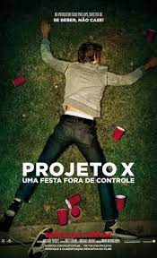

Trailer do filme
O filme foi dirigido pelo diretor Nima Nourizadeh.
Em 16 de março de 2012
Projeto X é um filme icônico, que mopstra as loucuras que uma festas organizada pro 3 jovens pode causar.
Alguns motivos para você assistir o filme!!!
Se quiser conhecer um pouco mais do elenco clique aqui